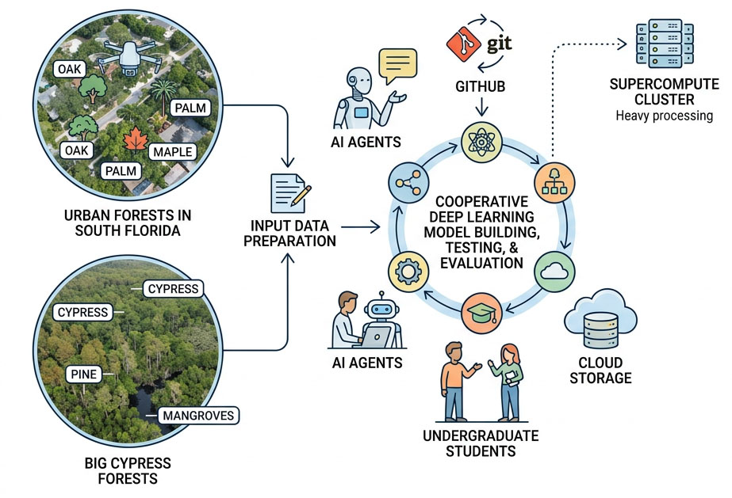
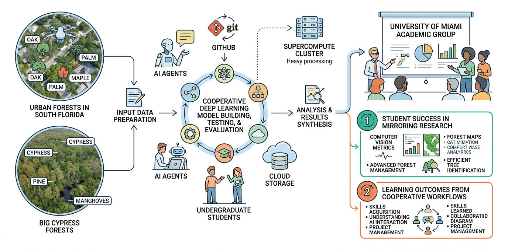

Rayan Arya - rxa1388@miami.edu
Timothy B Norris, PhD - tnorris@miami.edu



- Correa Martins JA, Nogueira K, Osco LP, Gomes FDG, Furuya DEG, Gonçalves WN, Sant’Ana DA, Ramos APM, Liesenberg V, dos Santos JA, et al. Semantic Segmentation of Tree-Canopy in Urban Environment with Pixel-Wise Deep Learning. Remote Sensing. 2021; 13(16):3054. https://doi.org/10.3390/rs13163054
- Yoo J, Qi Y, Ashe-McNalley I, MacDonald B, Wilson JP. An Open and Transferable Deep Learning Framework for Mapping Urban Tree Canopy Using NAIP Imagery. Remote Sensing. 2026; 18(12):1899. https://doi.org/10.3390/rs18121899

Thanks:
Chris Mader, Teddy Lhoutellier, Ken Feeley, Dharma Proctor, all the students who labelled trees on campus and in Big Cypress, Chris Elliot, Nick Alberti, Jerry Bonnell, Son Vo, Nathaniel Cockshutt, and others ...

1366 x 768 dimension illustration for internet presentation that shows a workflow starting with drone images of urban and big cypress forests in south florida with labelled trees, and these input data are used for cooperative deep learning model building, testing, and evaluation between AI agents, undergraduate students. The workflow is managed on github and the data is stored on Box, yet some of the workflow is processed on a supercompute cluster. The results are then shared to a group of academics at the university of miami. Two results are highlighted: 1) the student success in mirroring current research with computer vision for forest management and 2) the learning outcomes from guided cooperative workflows between students and ai agents. White background, slightly colored line art for workflow elements.